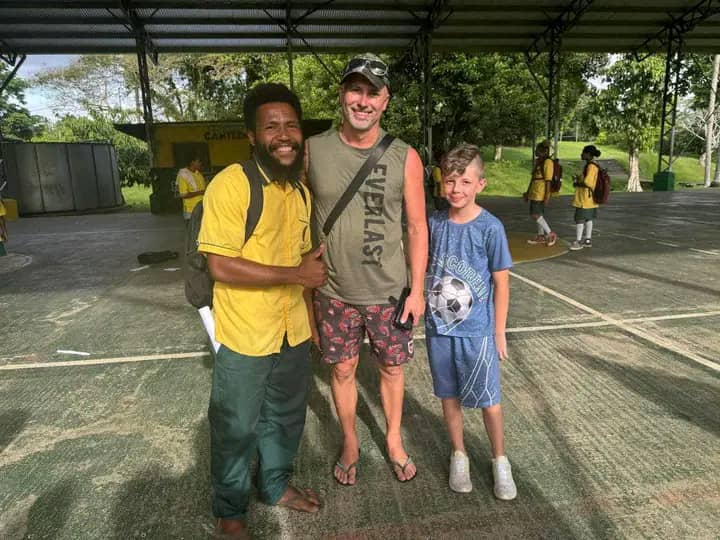

Bismark Touris was founded with a vision that went beyond showing visitors the beauty of East New Britain. The goal was to create a company that gives back to the community, turning tourism into a force for good.
Two years later, that vision has become reality. One of the initiatives the company is most proud of is the school visit program—a chance for guests to connect with local children, donate much-needed supplies, and experience the warmth and joy of Papua New Guinea's youngest generation.

The first school visit organized was a transformative experience. A group of travelers wanted to do something meaningful during their time in Kokopo, asking if there was a way to connect with the local community. The idea immediately turned to the primary school near the village where the company's founder grew up.
What happened that day changed how the company thinks about tourism. The children greeted visitors with songs and smiles. Guests handed out books and pencils. Teachers showed them around classrooms. By the time the group left, there were tears in everyone's eyes—not tears of sadness, but of connection, of shared humanity, of the simple joy that comes from giving.
Why Education Matters in East New Britain
Education is the key to opportunity. In East New Britain, as in many parts of Papua New Guinea, access to quality education can be a challenge. Schools often lack basic supplies—pencils, notebooks, textbooks, sports equipment. Classrooms can be crowded. Teachers work with limited resources, often buying supplies out of their own pockets.
But the children are eager to learn. Every time a school visit takes place, the same thing is observed: bright eyes, wide smiles, hands raised high. The children want to be there. They want to learn. They dream of becoming teachers, nurses, pilots, engineers. They dream of a future that education can help them build.
That is why school visits matter. It is not just about handing out supplies—though that is important. It is about showing these children that people care. That the world beyond their village is full of people who believe in them. That their dreams are valid, their potential limitless.
A Typical School Visit
School visits typically begin in the morning. The team meets guests at their accommodation, loads the vehicle with boxes of supplies, and makes the drive to the school. The journey takes travelers through villages and plantations, past cocoa trees and coconut palms, until a cluster of buildings surrounded by green hills comes into view.
As the vehicle pulls up, the children are already waiting. They line up along the road, waving and calling out greetings. "Good morning! Good morning!" Their voices are bright and eager. Guests wave back, their faces breaking into smiles.
The head teacher greets the group and leads them to a covered area where the students have gathered. They sit in neat rows, their uniforms pressed, their hair brushed. Some are nervous. Others can barely contain their excitement.
Then the welcome begins. The children sing—traditional songs, church hymns, even a few pop songs they have learned from the radio. Their voices rise together, pure and strong. Guests listen. Some are smiling. Some are wiping away tears.
After the singing, the head teacher welcomes the group formally. Then introductions are made, the purpose of the visit is explained, and the supplies are handed out.
There is nothing quite like the look on a child's face when they receive a new notebook. They hold it like treasure. They trace their fingers over the cover. They open it carefully, imagining the stories they will write, the sums they will solve, the drawings they will create.
Guests hand out pencils, rulers, sharpeners, erasers. Some have brought sports equipment—soccer balls, netballs, jump ropes. Others have brought books, carefully chosen for the school's library. Every item is received with gratitude, with wonder, with joy.
More Than Just Supplies
But the supplies are only part of the story. The real magic happens in the moments between—the connections that form when strangers meet, when barriers fall away, when people recognize themselves in each other.
One memorable visit involved a young girl who was shy at first. A guest, a retired teacher, sat down next to her. They looked at a picture book together, pointing at the images, sounding out the words. The girl's confidence grew with each page. By the end, she was reading aloud, her voice clear and proud.
The guest was moved to tears. "I've been teaching for forty years," she said. "I've seen thousands of children learn to read. But this—this is special."
They exchanged addresses and still write to each other. The girl sends drawings. The guest sends letters. They are friends, connected across oceans, bound by a shared moment in a schoolyard in Kokopo.
The Impact on Our Guests
School visits have been known to transform travelers. People who come to Papua New Guinea to see volcanoes and beaches often leave with something far more valuable—a connection to the community, a sense of purpose, a renewed faith in the goodness of humanity.
One guest, a businessman, said that the school visit was the highlight of his entire trip. "I've been to 60 countries," he said. "I've stayed in five-star hotels and eaten at Michelin-starred restaurants. But standing in that schoolyard, watching those children sing, handing a pencil to a little boy who looked at me like I'd given him the world—that was the best moment of my life."
Another guest, a young couple, returned the following year. They had been saving up, and they wanted to do more. They brought two suitcases filled with supplies—books, pencils, soccer balls, art materials. They spent a week visiting three different schools, sharing stories, making friends.
"We wanted our children to understand what really matters," the mother said, gesturing to her two young boys, who were kicking a soccer ball with some local kids. "They'll remember this forever."
The Impact on the Schools
The schools are the real beneficiaries. The supplies make a real difference. A box of pencils might seem small, but for a teacher who has been sharpening stubs for weeks, it is a gift beyond measure. A set of textbooks can transform a classroom. Sports equipment can change a school's culture, giving children an outlet for their energy, a reason to come to school, a chance to play.
But the impact goes beyond the physical. The visits themselves—the attention, the recognition, the validation—matter just as much. The children see that people from far away care about them. That their school matters. That their education is valued.
Attendance has been known to increase after visits. Teachers often appear more energized, more committed. Pride in the community grows—a sense that their children are seen, their school is recognized, their future is bright.
One head teacher said: "When you come, you remind us why we do this work. You remind us that our children matter, that their education matters, that what we do here every day has meaning."
Schools We've Visited
Over the past two years, more than a dozen schools across East New Britain have been visited. Each one is unique, with its own character, its own challenges, its own bright spots of hope.
There is the small village school where the children walk two hours each way to get to class. On one visit, shoes were brought for every child. The head teacher wept when she saw them. "They've never had shoes," she said. "They walk on rocks and mud, their feet cut and bruised. You've given them more than footwear. You've given them dignity."
There is the school in Kokopo where a library was built with help from guests. Books were donated, and local builders constructed shelves. The librarian said it was her dream come true. "I wanted these children to have a place to read," she said. "A place where they can imagine other worlds, other lives, other possibilities. Now they have it."
There is the school where a feeding program is sponsored. Many children come to school hungry, their stomachs empty, their minds distracted. Working with mothers in the community, simple nutritious meals are prepared. The difference is remarkable. Children who were tired and withdrawn come alive. They learn better. They play harder. They grow stronger.
The Ripple Effect
The ripple effect is perhaps the most rewarding aspect of the school visits. One act of kindness leads to another. One moment of connection leads to lasting friendships. One small gift leads to a world of possibility.
Some of the children who have received supplies will become teachers, nurses, engineers, community leaders. They will remember that strangers came to their school, that people believed in them, that the world is full of kindness. And they will pass that kindness on.
Guests return to their homes with new perspectives, new priorities, new friends. They tell their stories. They inspire others. They come back, year after year, bringing more supplies, more love, more hope.
And the community grows stronger through these connections. Schools improve. Children become more confident. Parents feel prouder. And the people of East New Britain know that they are not alone—that the world sees them, that the world cares.
How You Can Help
If you are planning a visit to East New Britain, you are invited to join a school visit. It is a chance to see a different side of Papua New Guinea—the side that does not make it into the travel brochures, but the side that will stay with you long after you have gone home.
You do not need to bring much. A few notebooks. Some pencils. A soccer ball. A smile. The children will welcome you with open arms. The teachers will show you their classrooms. The community will open their hearts.
And you will leave changed.
If you cannot make the trip, there are other ways to help. Donations of school supplies are accepted year-round. You can contact the company to arrange a contribution. Every pencil, every book, every soccer ball makes a difference.
You can also spread the word. Tell your friends about the school visits. Share the stories. Help build a network of support for these children, these teachers, these communities.
Frequently Asked Questions
How can I participate in school visits in Papua New Guinea?
If you're planning a visit to East New Britain, you can join a school visit through Bismark Touris. Contact us through our website or WhatsApp to arrange a visit during your stay.
What school supplies are most needed in East New Britain?
Pencils, notebooks, textbooks, art supplies, soccer balls, and sports equipment are always needed. Even small donations make a big difference to local schools.
Can I donate supplies without visiting Papua New Guinea?
Yes! We accept donations of school supplies year-round. Contact us to arrange a contribution, and we'll ensure it reaches local schools in East New Britain.
How does Bismark Touris support local communities?
We organize school visits, donate educational supplies, support feeding programs, and help build libraries in East New Britain communities.
Are school visits available year-round?
School visits are available throughout the year, subject to school schedules. We recommend contacting us in advance to arrange a visit during your trip to Papua New Guinea.
A Final Thought
Looking at a photo from a recent school visit, the image shows a group of children, their faces bright with smiles, holding up the supplies that were brought. In the background, a teacher watches, her hand on a student's shoulder. In the foreground, a guest kneels, eye-level with a little girl, listening to her read.
This is what tourism should be. Not just sightseeing, but connecting. Not just consuming, but giving. Not just passing through, but staying—in memory, in spirit, in the lives touched.
The school visit program is something to be proud of. The connections made, the lives touched, the hope shared. And you are invited to join. Whether you come to Kokopo or support from afar, you can be part of this work. You can help build a brighter future for the children of East New Britain.
Because every child deserves to learn. Every child deserves to dream. And every child deserves to know that someone, somewhere, believes in them.
Bismark Touris believes that tourism has the power to transform not just the traveler, but the communities they visit. Contact us to learn more about the school visit program.
📚 Want to support education in East New Britain?
Contact us to learn how you can donate supplies or join one of our community outreach visits. Every contribution makes a difference!
Get Involved →